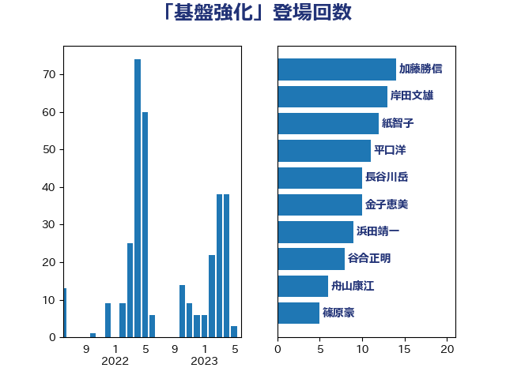

単語「基盤強化」

| 赤羽一嘉 | 公明党 | 33 回 |
| 青木愛 | 立憲民主党 | 18 回 |
| 梶山弘志 | 自由民主党 | 13 回 |
| 平口洋 | 自由民主党 | 12 回 |
| 紙智子 | 日本共産党 | 12 回 |
| 高橋千鶴子 | 日本共産党 | 12 回 |
| 金子恵美 | 立憲民主党 | 10 回 |
| 長谷川岳 | 自由民主党 | 10 回 |
| 谷合正明 | 公明党 | 8 回 |
| あかま二郎 | 自由民主党 | 7 回 |
| 田村憲久 | 自由民主党 | 6 回 |
| 舟山康江 | 国民民主党 | 6 回 |
| 斉藤鉄夫 | 公明党 | 5 回 |
| 浜野喜史 | 国民民主党 | 5 回 |
| 坂本哲志 | 自由民主党 | 4 回 |
| 宮下一郎 | 自由民主党 | 4 回 |
| 岸信夫 | 自由民主党 | 4 回 |
| 後藤茂之 | 自由民主党 | 4 回 |
| 森屋隆 | 立憲民主党 | 4 回 |
| 海江田万里 | 立憲民主党 | 4 回 |
| 田村貴昭 | 日本共産党 | 4 回 |
| 辻元清美 | 立憲民主党 | 4 回 |
| 三浦信祐 | 公明党 | 3 回 |
| 吉田宣弘 | 公明党 | 3 回 |
| 室井邦彦 | 日本維新の会 | 3 回 |
| 宮崎雅夫 | 自由民主党 | 3 回 |
| 渡辺創 | 立憲民主党 | 3 回 |
| 細田博之 | 自由民主党 | 3 回 |
| 萩生田光一 | 自由民主党 | 3 回 |
| 中村裕之 | 自由民主党 | 2 回 |
| 井上英孝 | 日本維新の会 | 2 回 |
| 伊佐進一 | 公明党 | 2 回 |
| 古賀篤 | 自由民主党 | 2 回 |
| 山本博司 | 公明党 | 2 回 |
| 山田俊男 | 自由民主党 | 2 回 |
| 岸田文雄 | 自由民主党 | 2 回 |
| 川田龍平 | 立憲民主党 | 2 回 |
| 武見敬三 | 自由民主党 | 2 回 |
| 田名部匡代 | 立憲民主党 | 2 回 |
| 芳賀道也 | 国民民主党 | 2 回 |
| 道下大樹 | 立憲民主党 | 2 回 |
| 野上浩太郎 | 自由民主党 | 2 回 |
| 金城泰邦 | 公明党 | 2 回 |
| 長友慎治 | 国民民主党 | 2 回 |
| 音喜多駿 | 日本維新の会 | 2 回 |
| 須藤元気 | 無所属 | 2 回 |
| 麻生太郎 | 自由民主党 | 2 回 |
| 下野六太 | 公明党 | 1 回 |
| 佐藤啓 | 自由民主党 | 1 回 |
| 古賀之士 | 立憲民主党 | 1 回 |
| 和田義明 | 自由民主党 | 1 回 |
| 城井崇 | 立憲民主党 | 1 回 |
| 大西英男 | 自由民主党 | 1 回 |
| 大野泰正 | 自由民主党 | 1 回 |
| 小山展弘 | 立憲民主党 | 1 回 |
| 小林鷹之 | 自由民主党 | 1 回 |
| 山口那津男 | 公明党 | 1 回 |
| 山東昭子 | 自由民主党 | 1 回 |
| 岡本三成 | 公明党 | 1 回 |
| 庄子賢一 | 公明党 | 1 回 |
| 斎藤嘉隆 | 立憲民主党 | 1 回 |
| 本村伸子 | 日本共産党 | 1 回 |
| 本田顕子 | 自由民主党 | 1 回 |
| 武田良太 | 自由民主党 | 1 回 |
| 武部新 | 自由民主党 | 1 回 |
| 渡辺猛之 | 自由民主党 | 1 回 |
| 熊野正士 | 公明党 | 1 回 |
| 田村智子 | 日本共産党 | 1 回 |
| 秋野公造 | 公明党 | 1 回 |
| 稲津久 | 公明党 | 1 回 |
| 篠原孝 | 立憲民主党 | 1 回 |
| 篠原豪 | 立憲民主党 | 1 回 |
| 羽田次郎 | 立憲民主党 | 1 回 |
| 若林健太 | 自由民主党 | 1 回 |
| 茂木敏充 | 自由民主党 | 1 回 |
| 葉梨康弘 | 自由民主党 | 1 回 |
| 藤木眞也 | 自由民主党 | 1 回 |
| 西岡秀子 | 国民民主党 | 1 回 |
| 西村康稔 | 自由民主党 | 1 回 |
| 赤澤亮正 | 自由民主党 | 1 回 |
| 足立敏之 | 自由民主党 | 1 回 |
| 酒井庸行 | 自由民主党 | 1 回 |
| 野間健 | 立憲民主党 | 1 回 |
| 鈴木英敬 | 自由民主党 | 1 回 |
| 高橋光男 | 公明党 | 1 回 |
| 鳩山二郎 | 自由民主党 | 1 回 |